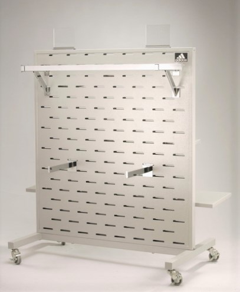
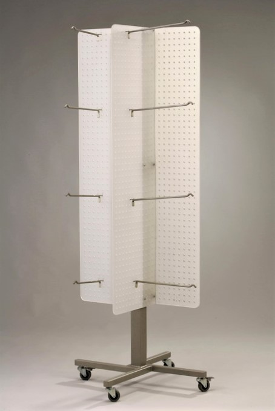

YC-1524L
Source record: 24 × 30 × 56 in or 48 × 30 × 56 in metal slot fixture, with 3 in rubber casters, without cardholder, powder-coat finish.
B2B MODULAR RETAIL FIXTURES
移動・組み替え可能な店舗什器から確認します。型式、寸法、パネル、仕上げを確認し、図面と案件条件で正式仕様を確定します。
モジュール什器を相談YC-1524L · ARC67-A: Modular fixtures／模組化展示架／モジュール什器

Source record: 24 × 30 × 56 in or 48 × 30 × 56 in metal slot fixture, with 3 in rubber casters, without cardholder, powder-coat finish.
Source record: freestanding 24.5 × 24.5 × 59 in sock rack, four white acrylic panels, 2 in casters, powder-coat metal finish.

These are documented representative variants. Other models, panel materials, load, packaging, MOQ, lead time and customization require the matching source record and project confirmation.
Share the store type, aisle or wall position, required mobility and display products.
Share available width, depth, height, caster requirements and whether cardholders are needed.
Material, load, packaging, MOQ, lead time and customization are confirmed by model and project.
Related: ディスプレイフック · Modular display system case · Modular 3C store case · 自動車部品ラック記録 · ヘアケア什器の設計記録
正式見積の前に共通して確認する項目です。該当 SKU、図面、見積、サンプルで確認できた内容だけを正式仕様とします。
店舗タイプ、背板・取付システム、展示商品、現場条件を確認します。
材料グレード、色、仕上げ、外観は SKU、図面、見積、サンプルで確認します。
寸法、線径、板厚、荷重、固定方法は代表図面と案件条件で確認します。
全製品共通の MOQ・納期はありません。型式、数量、材料、仕上げ、案件条件で確認します。
寸法、写真、図面、数量、使用条件を共有いただき、サイズ、材料、仕上げ、構造変更の可否を判断します。
代表写真、図面、事例は初期検討用です。正式な PDF、CAD、サンプル、商業条件は承認版に基づき提供します。
寸法図、CAD、材料、仕様概要が必要ですか。技術資料を確認してからお問い合わせください。 technical-resources
Start with the documented variant, site dimensions and display need. Custom scope, drawings, material and finish are confirmed by project.
YC-1524L and ARC67-A have source text records for dimensions, casters and finish. Other variants need their own source records.